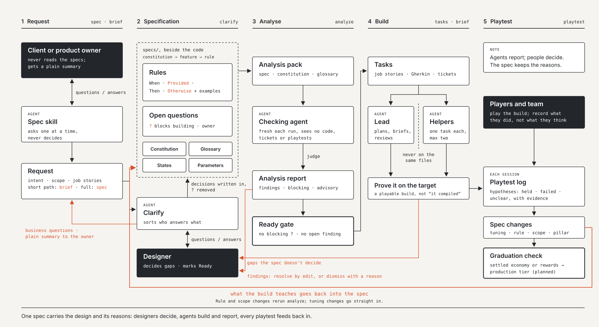

dl-prototype 0.2.1 · a Claude Code plugin
Spec-driven development, led by design.
A method for game teams working with AI agents. Design leads, code follows, and every playtest feeds back into the spec, with the reasons kept.

01Why
Most spec-driven tools assume software. Games find their design by being played.
The problem
Specs that never meet a build
Write a spec, plan, build, done: that order breaks the first time a playtest shows the fun is somewhere else.
The fix
The spec changes after every playtest
What a build teaches goes back into the spec, so it stays the record of why the game is the way it is.
The rule
Agents report; people decide
Agents build fast and never guess. A gap the spec did not decide is marked ? and goes to the person who owns it.
02Two starts
A brand new game, or one already in development or live.
New game · constitution
Write down intent
Pillars, platforms, boundaries and agent rules, built from questions asked one at a time. Feature specs come before building.
Existing game · adopt
Take stock, change nothing
Drafts the constitution and glossary from your existing docs, imports open questions, and maps old documents to features.
- Spec the change, not the game
- The build beats the document
03The loop
Steps 6 to 8 repeat until the feature is fun.
| # | Step | What happens |
|---|---|---|
| 1 | Spec first | Search the specs; raise real design decisions as open questions |
| 2 | Choose the path | A brief for a small change, a feature spec for a new system |
| 3 | Clarify | No feature leaves Draft with a blocking question |
| 4 | Analyse | A separate agent checks the spec against everything else |
| 5 | Break it down | Job stories with Gherkin acceptance criteria |
| 6 | Build | On a branch, in slices that can be played |
| 7 | Prove it | On the real target. "It compiled" is not proof |
| 8 | Playtest | What the build teaches goes back into the spec |
| 9 | Write it down | State, decisions, and every mistake as a new rule |
Every rule has a guard
F001.claim-once: one gift a day When the player opens the beach Provided not claimed since the reset Then the gift can be claimed Otherwise show the time to the next reset
The Otherwise is where most game bugs live.
04Eight skills
Each runs one step in Claude Code and asks one question at a time.
| Skill | Does | Gate it enforces |
|---|---|---|
constitution | Sets up a new game: constitution, AGENTS.md, open questions, glossary, state file | Every agent reads the constitution first |
adopt | Brings an existing game in from its own docs, code and registers | Changes nothing that already exists |
spec | Writes or revises a feature spec (full path) | Undecided places marked ?, never guessed |
brief | One-page brief for a small change, optionally handed to a helper agent | Must end with proof on the target |
clarify | Works open questions down and finds unmarked gaps | No Ready while a blocking question is open |
analyze | Independent consistency check across specs, by a separate agent | No Ready with an unresolved finding |
tasks | Job stories, Gherkin criteria and tasks per discipline, ready for tickets | Only Ready specs |
playtest | Records a session and turns it into spec changes | Rule and scope changes rerun analyze |
05Two tiers
Light while you find the fun. Strict once a wrong rule costs money or trust.
Available · dl-prototype
Prototype tier
Feature folders, guarded rules where they matter, specs revised after each playtest. Low overhead.
Planned · dl-production
Production tier
Every change an amendment checked against a baseline, with independent testing and checking agents. For economy, rewards, purchases and anything live.
06Install
In Claude Code, add the marketplace and install the plugin.
/plugin marketplace add <this repository> /plugin install dl-prototype@design-led-sdd # new game /dl-prototype:constitution # existing game /dl-prototype:adopt
Or just describe what you want ("spec out a daily gift", "here are our playtest notes"): the skills load by themselves.
07Read
Everything you need to use, teach or pitch the method.
Guide
Method guide
The whole method in eight sections.
HTML · Markdown in the repo
Example
Worked example
One feature taken once round the loop, from request to playtest.
HTML · Markdown in the repo
Cheat sheet
One A4 page for the desk: skills, rule format, gates.
PDF · also as HTML and PNG

Diagram
Method flow
The five stages and who owns each decision.
SVG · PNG
08Where it comes from
A working studio method, plus the best ideas from two open projects.
Practice
A studio's working method
The AI-first loop, job stories with Gherkin, Definitions of Ready and Done, and the open questions register, from a mobile game in production.
Borrowed
GitHub Spec Kit
The constitution, the clarify and analyse gates, short and full paths, tasks to tickets, layered overrides.
Borrowed
Proviso
By Bruno Baketarić. Guarded rules, undecided places that block building, and checking agents kept apart from the work.